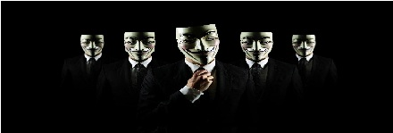
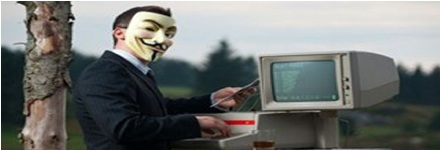
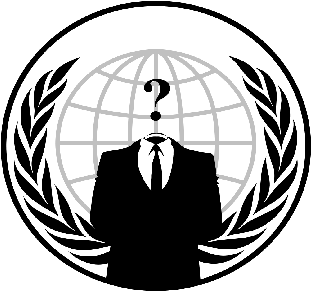

WHO WE ARE

> We are Anonymous.
> We are Legion.
> We do not Forgive.
> We do not Forget.
> EXPECT US!
Planning
Anonymous which is the name who protest against their demand, they have taken on the Church of Scientology, the CIA, Kitten-abusing teens and the security think tank Start for with great success but if you will talk about about the biggest social network Facebook, they never succeeded.
Now after a long trial of taking Facebook offline or Hack their servers , now Anonymous Planning to Flood Facebook with “Uncensored material” as it has become part of #OpTruthForce.
History
The name Anonymous itself is inspired by the perceived anonymity under which users post images and comments on the Internet. Usage of the term Anonymous in the sense of a shared identity began on imageboards, particularly the board of 4chan, dedicated to random content. A tag of Anonymous is assigned to visitors who leave comments without identifying the originator of the posted content. Users of imageboards sometimes jokingly acted as if Anonymous was a single individual. The concept of the Anonymous entity advanced in 2004 when an administrator on the 4chan image board activated a "Forced_Anon" protocol that signed all posts as Anonymous.As the popularity of imageboards increased, the idea of Anonymous as a collective of unnamed individuals became an Internet meme.
Users of 4chan's board would occasionally join into mass pranks or raids. In a raid on July 12, 2006, for example, large numbers of 4chan readers invaded the Finnish social networking site Habbo Hotel with identical avatars; the avatars blocked regular Habbo members from accessing the digital hotel's pool, stating it was "closed due to fail and AIDS". Future LulzSec member Topiary became involved with the site at this time, inviting large audiences to listen to his prank phone calls via Skype.Due to the growing traffic on 4chan's boards, users soon began to plot pranks offline using Internet Relay Chat (IRC).These raids resulted in the first mainstream press story on Anonymous, a report by Fox affiliate KTTV in Los Angeles, California in the U.S. The report called the group "hackers on steroids", "domestic terrorists", and an "Internet hate machine".